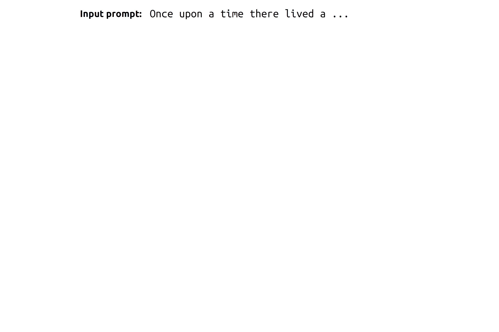
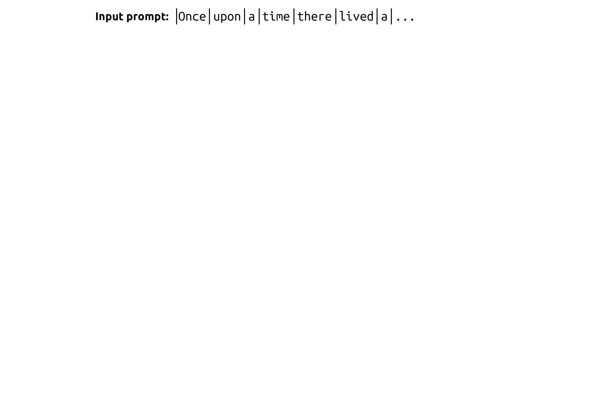
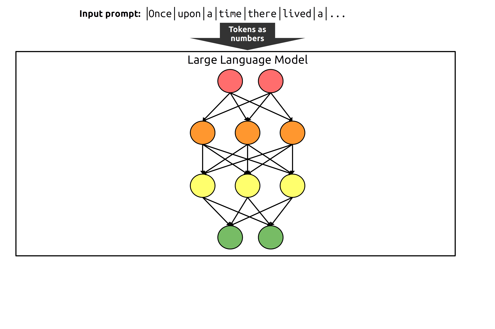
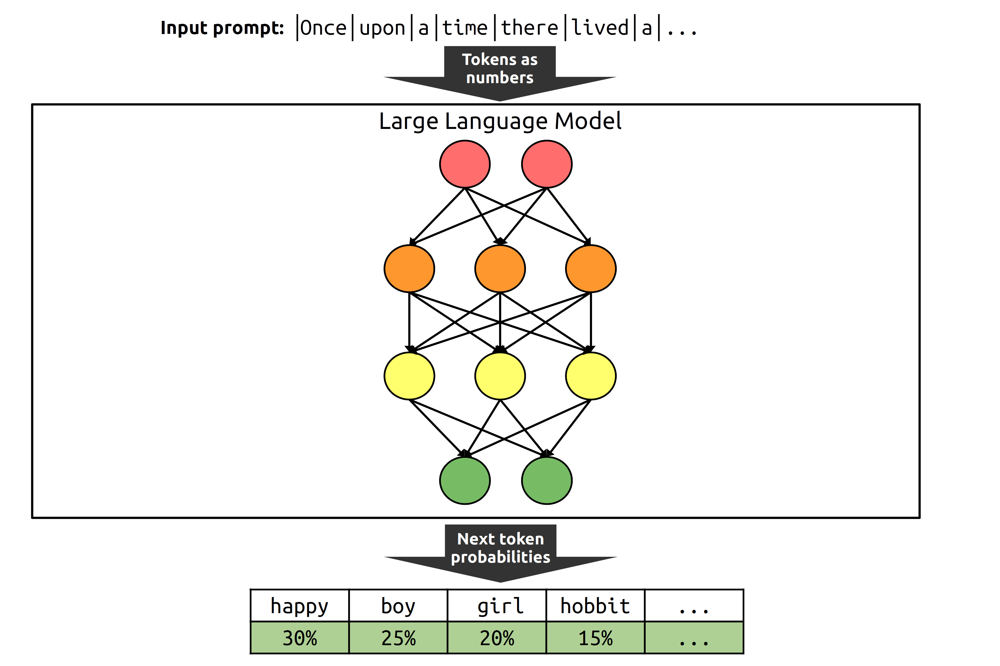
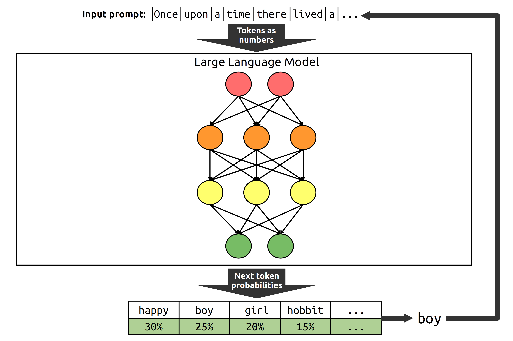
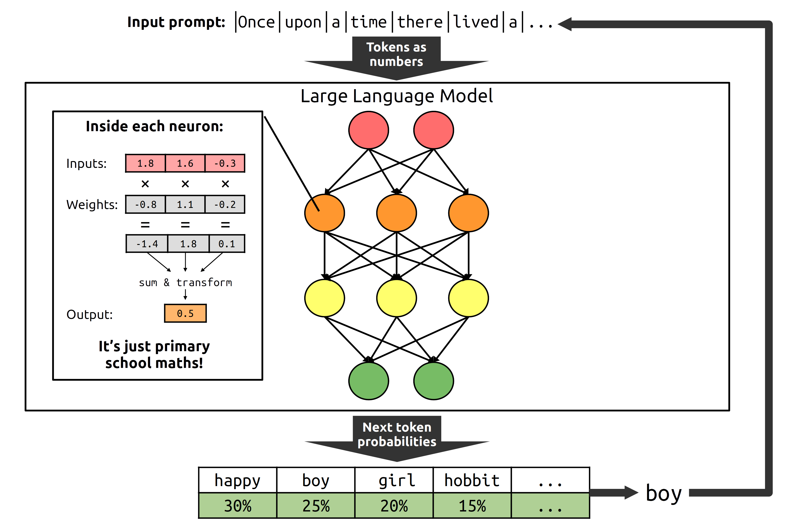
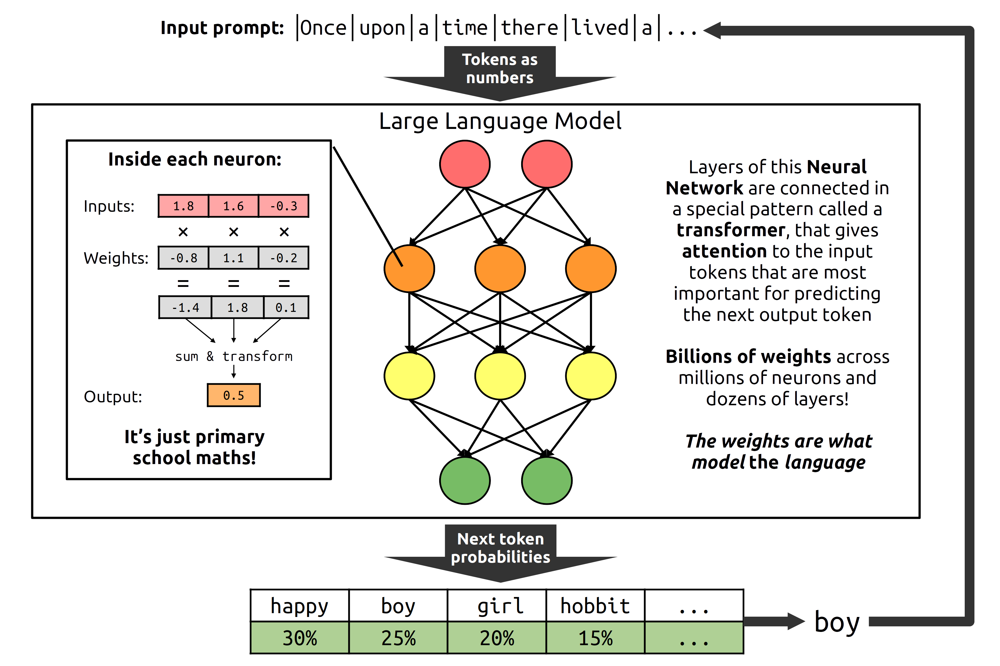

How generative AI works and how that informs how to best use it
      
The Beatles were a ____ from England
band
Make your own chatbot to answer questions based on information in a document
Either you test your chatbot, or your users will!
Extra: Learn more about how LLMs work with a brief explainer or a deeper dive (more maths) from 3Blue1Brown.